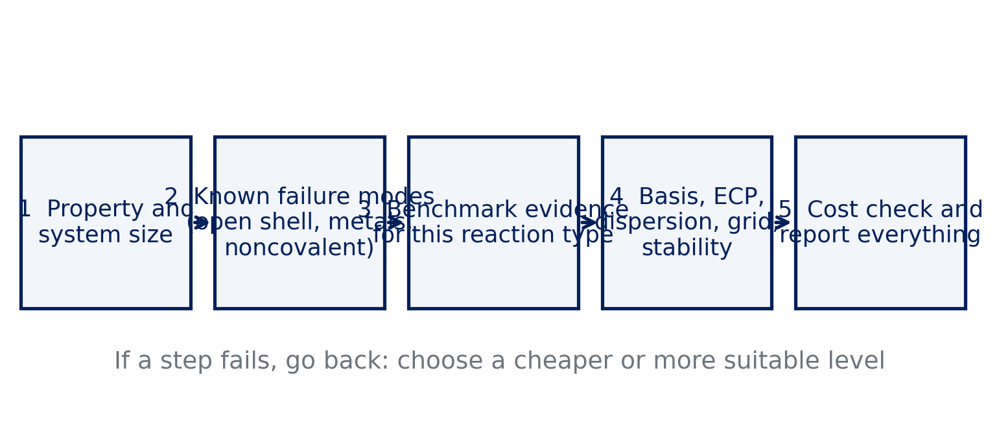

Lecture 14 · Debrief Exp. 9 · Choosing, running and reporting a method
A decision procedure, a reporting checklist, and the final experiment
Advanced Physical Chemistry · Florida Institute of Technology
Debrief: Experiment 9
Your results
[Live: open Class results → Experiment 9 heatmap]
- Errors for bond dissociation and atomization energies, five methods
- Compare closed-shell molecules with atoms and radicals
[Insert class plot: atomization errors by method]
[Insert class plot: Experiment 9 signed error of the five atomization energies for MN15-L, MN15, B3LYP, PBE and HF]
[Insert class plot: NIST comparison]
[Insert class plot: Experiment 9 NIST panel: reference electronic energy vs. experimental enthalpy for tert-butanol and FeCl, with the size of the difference]
What you probably saw: radicals and atoms
- Open-shell atoms and radicals give larger spreads between methods
- Errors in atomization grow with the number of bonds broken
- HF underbinds strongly: no correlation energy
- Functionals fitted to such data (Minnesota) tend to do better on them
FeCl and the thermal correction
- FeCl combines a transition metal with an open-shell, high-spin ground state
- Method spread is typically larger than for tert-butanol
- NIST enthalpy and the reference electronic energy differ by ZPE and thermal terms
- The size of that difference is comparable to the accuracy you are chasing
Basis set effect on tert-butanol
- B3LYP/6-31G* versus B3LYP/def2-TZVP for the C–O bond
- Recall Experiment 6: a small basis can look good or bad for reasons unrelated to the functional
- Compare both with the reference before drawing a conclusion
Atoms and radicals are hard; HF fails on atomization; always compare like with like against experiment.
How to choose a method
No universal best
- No functional is the best for everything
- A choice is a decision under constraints: accuracy needed, cost allowed, known failures
- Your evidence: Experiments 1–9
- Document why you chose it
A decision flow

Schematic decision flow.
Step 1: property and size
- What do you want: reaction energy, barrier, noncovalent binding, spin gap?
- How big is the system and how many calculations?
- Cost budget: the free server stops after 10 minutes
- Cheap enough to check convergence, not just run once
Step 2: known failure modes
- Open shells and radicals: unrestricted, check stability
- Transition metals: spin states, SCF problems, ECPs
- Noncovalent interactions: dispersion needed
- Stretched bonds and diradicals: static correlation, self-interaction
Step 3: benchmark evidence
- Look for benchmark studies of your reaction type
- GMTKN55 and MGCDB84 summaries are a starting point (Goerigk 2017; Mardirossian 2017)
- Prefer functionals that do well on data not used to fit them
- Course evidence: which methods held up from Experiment 3 to 9?
Step 4: the rest of the setup
| Choice | Guideline |
|---|---|
| Basis set | triple-ζ (def2-TZVP) as a rule; check convergence |
| Heavy elements | ECP, e.g. ECP def2-ECP |
| Dispersion | -D4 with a functional it was fitted for, or a VV10 functional; never both |
| Grid | at least SG-3 for meta-GGAs |
| Stability | INTERNAL_STABILITY TRUE for open shells and metals |
Quick question
A colleague asks you to use B3LYP-D4 with 6-31G* “because everyone does.”
What do you check first?
Whether the basis is converged enough for the question (compare with a triple-ζ set), and whether the dispersion correction and the basis do not double-count. Then check the functional’s evidence for your reaction type.
Step 5: cost check
- Estimate time per SCF cycle from a small test
- Count the jobs
- A cheaper choice that fits the budget beats a better one that does not finish
- Test on a smaller model first
Reproducibility: what to report
- Program and version (Q-Chem, via IQmol)
- Functional (and dispersion correction)
- Basis set and ECP
- Integration grid
- SCF convergence criterion and stability analysis
- Geometry source (and charge and multiplicity)
A result that cannot be reproduced from the report is not a result.
Experiment 10 briefing
The request
- You are the consultant: a colleague needs a Pd–ligand bond energy
- Every choice is yours: functional, basis set, ECP, grid, stability
- You will write a short report
The reaction
Pd(PH₃)₂(C₆H₈) → Pd(PH₃)₂ + C₆H₈
- Reference: 16.2 kcal/mol (PdBE2 subset)
- Three species, all singlets

Your tools
- Method card on the Experiment 10 page: choose each setting and write down why
- It warns about common pitfalls: double-counting dispersion, grid-sensitive functionals
- It checks whether each job fits in 10 minutes
- It writes the three Q-Chem inputs for you
Cost check
- Pd needs an ECP:
ECP def2-ECPwith the def2 basis sets - The Pd complex is the biggest molecule you have run
- Test one job first and read the wall time
- Everything must fit within the 10-minute limit
Report (about 300 words)
- Title
- Method and why, with references
- Complete computational setup, enough to reproduce
- Your result compared with the reference 16.2 kcal/mol
- Short conclusion, then references
Predict first
- What do you expect for the result, and what error?
- Which choices do you consider critical?
- What would you change with ten times more computer time?
Pitfalls
- Using a basis without an ECP for Pd
- Double-counting dispersion
- Choosing a grid-sensitive functional with a small grid
- Comparing ΔE_el with an enthalpy without saying so
References
- Goerigk, L. et al. Phys. Chem. Chem. Phys. 19 (2017): GMTKN55.
- Mardirossian, N.; Head-Gordon, M. Mol. Phys. 115 (2017): functional benchmarks.
- Dohm, S. et al. J. Chem. Theory Comput. 14 (2018): thermochemical benchmark of metal-organic reactions.
- Weigend, F.; Ahlrichs, R. Phys. Chem. Chem. Phys. 7 (2005): def2 basis sets and ECPs.
- Caldeweyher, E. et al. J. Chem. Phys. 147 (2017); 150 (2019): D4.

CHM 5111 · Advanced Physical Chemistry · Florida Institute of Technology